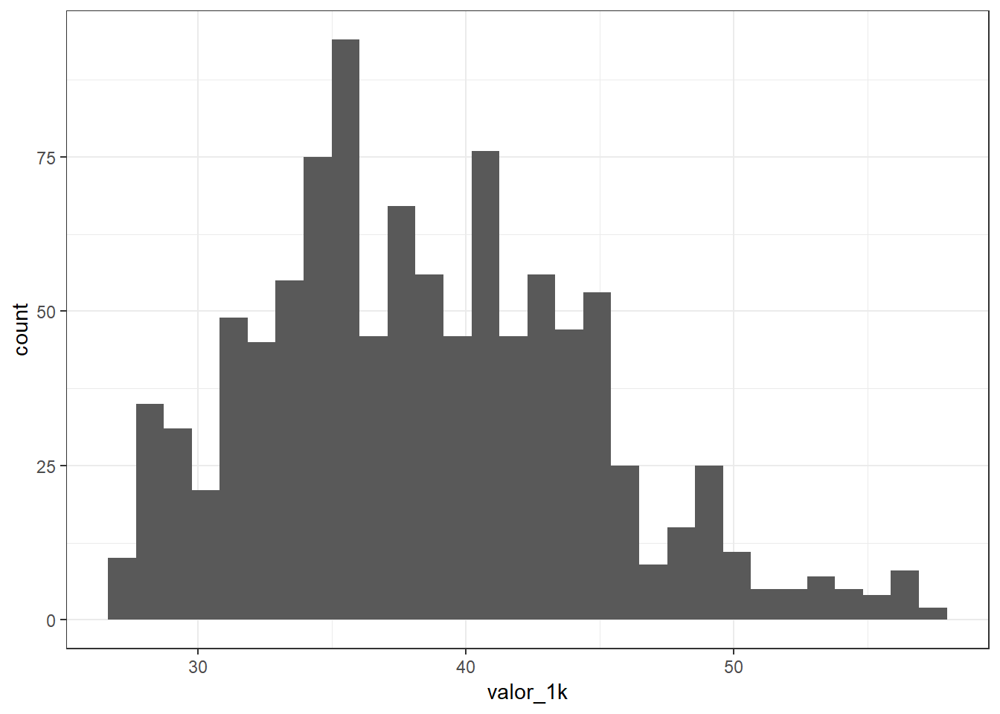
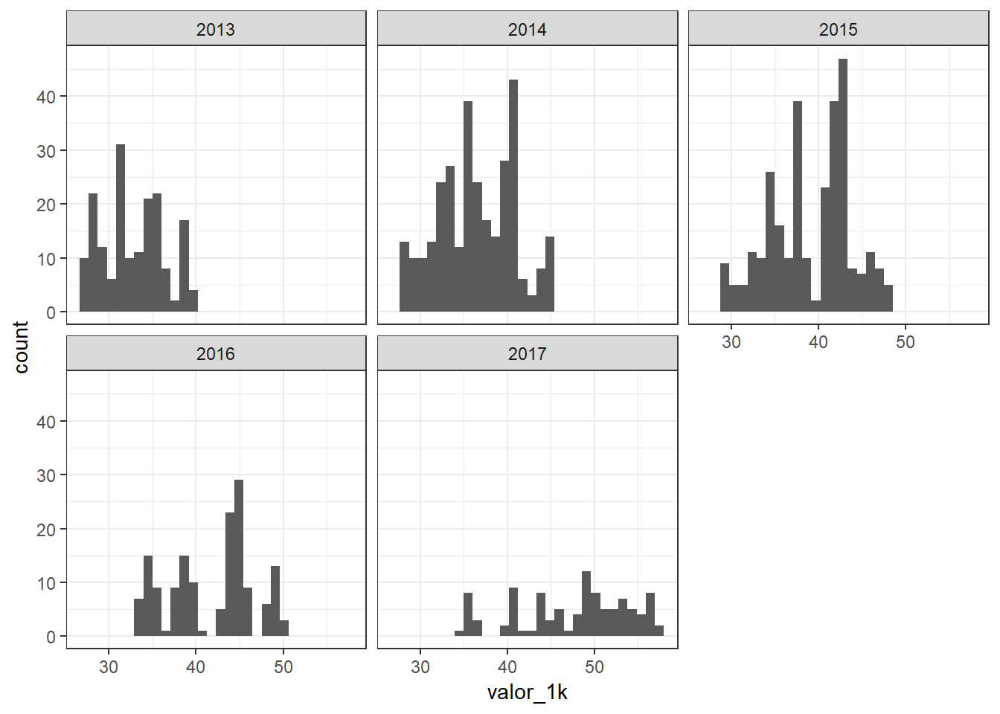
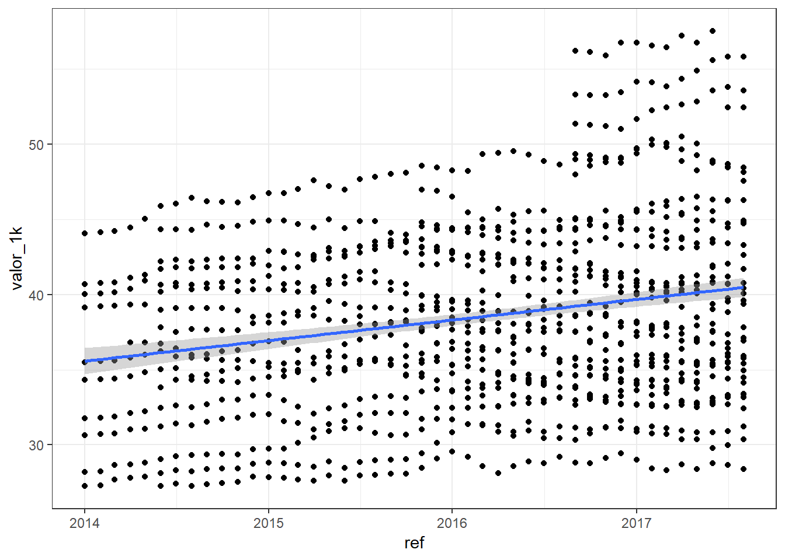
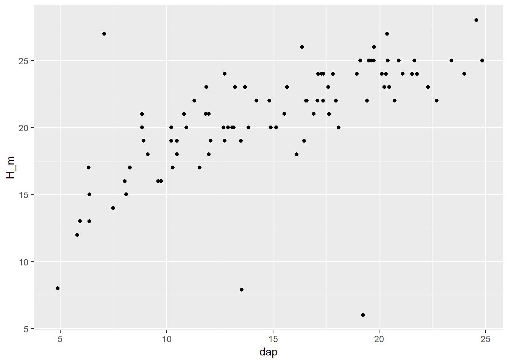
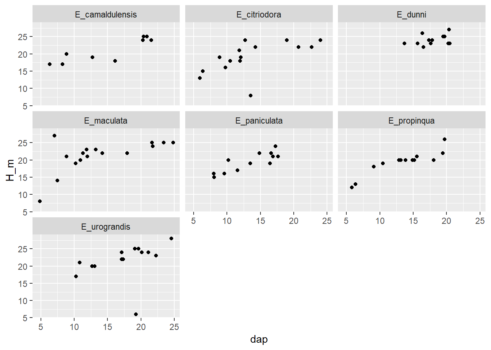
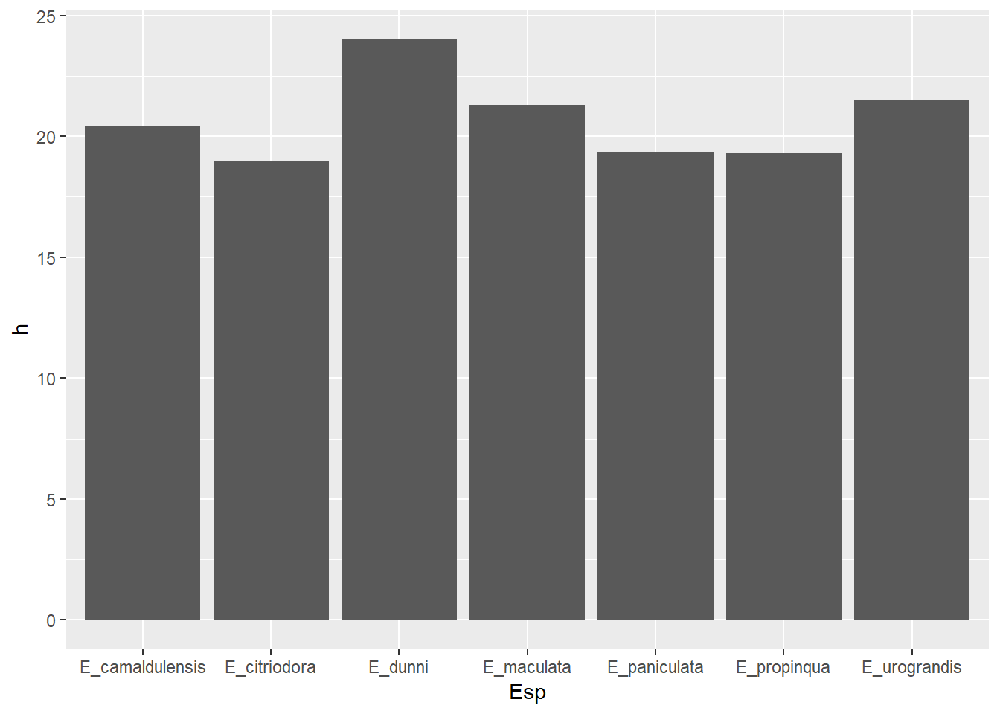
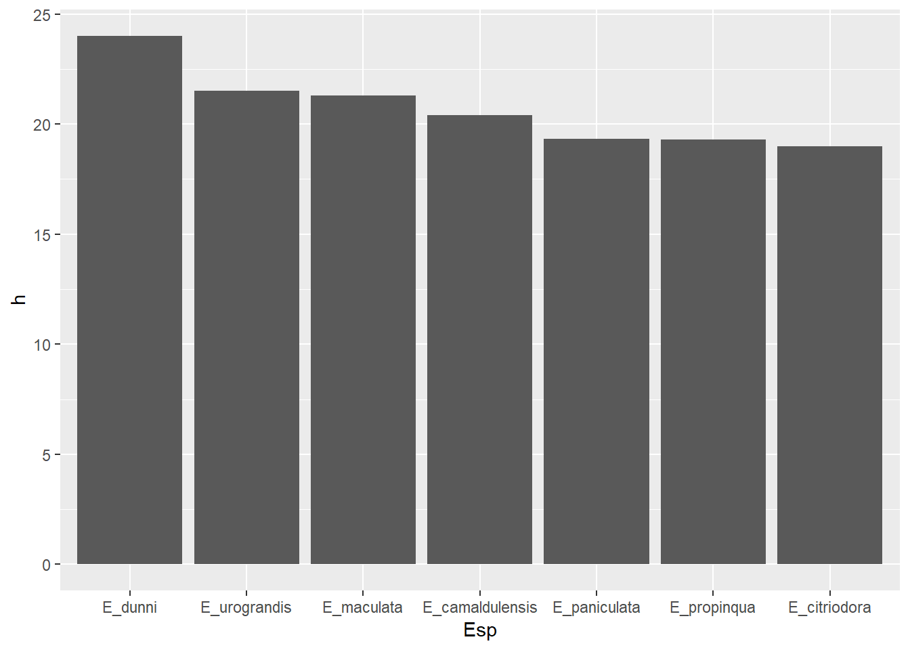

onix.xlsx, que está na pasta input, para um objeto chamado onix. Imprima o conteúdo do data.frame na tela.## # A tibble: 1,029 x 4
## ref modelo ano valor
## <dttm> <chr> <dbl> <dbl>
## 1 2017-08-01 00:00:00 ONIX Lollapalooza 1.0 F.Power 5p Mec. 2014 33394
## 2 2017-08-01 00:00:00 ONIX HATCH ACTIV 1.4 8V Flex 5P Aut. 2017 55821
## 3 2017-08-01 00:00:00 ONIX HATCH ACTIV 1.4 8V Flex 5p Mec. 2017 52450
## 4 2017-08-01 00:00:00 ONIX HATCH EFFECT 1.4 8V F.Power 5p Mec. 2017 46298
## 5 2017-08-01 00:00:00 ONIX HATCH EFFECT 1.4 8V F.Power 5p Mec. 2016 44722
## 6 2017-08-01 00:00:00 ONIX HATCH EFFECT 1.4 8V F.Power 5p Mec. 2015 41718
## 7 2017-08-01 00:00:00 ONIX HATCH Joy 1.0 8V Flex 5p Mec. 2017 35889
## 8 2017-08-01 00:00:00 ONIX HATCH LS 1.0 8V FlexPower 5p Mec. 2016 34473
## 9 2017-08-01 00:00:00 ONIX HATCH LS 1.0 8V FlexPower 5p Mec. 2015 33352
## 10 2017-08-01 00:00:00 ONIX HATCH LS 1.0 8V FlexPower 5p Mec. 2014 30371
## # ... with 1,019 more rowsvalor_1k que armazenará o valor do carro dividido por 1000. Salve o resultado no objeto chamado onix.## # A tibble: 1,029 x 5
## ref modelo ano valor valor_1k
## <dttm> <chr> <dbl> <dbl> <dbl>
## 1 2017-08-01 00:00:00 ONIX Lollapalooza 1.0 F.Power~ 2014 33394 33.4
## 2 2017-08-01 00:00:00 ONIX HATCH ACTIV 1.4 8V Flex 5~ 2017 55821 55.8
## 3 2017-08-01 00:00:00 ONIX HATCH ACTIV 1.4 8V Flex 5~ 2017 52450 52.4
## 4 2017-08-01 00:00:00 ONIX HATCH EFFECT 1.4 8V F.Pow~ 2017 46298 46.3
## 5 2017-08-01 00:00:00 ONIX HATCH EFFECT 1.4 8V F.Pow~ 2016 44722 44.7
## 6 2017-08-01 00:00:00 ONIX HATCH EFFECT 1.4 8V F.Pow~ 2015 41718 41.7
## 7 2017-08-01 00:00:00 ONIX HATCH Joy 1.0 8V Flex 5p ~ 2017 35889 35.9
## 8 2017-08-01 00:00:00 ONIX HATCH LS 1.0 8V FlexPower~ 2016 34473 34.5
## 9 2017-08-01 00:00:00 ONIX HATCH LS 1.0 8V FlexPower~ 2015 33352 33.4
## 10 2017-08-01 00:00:00 ONIX HATCH LS 1.0 8V FlexPower~ 2014 30371 30.4
## # ... with 1,019 more rowsvalor_1k.## # A tibble: 35 x 3
## # Groups: modelo [12]
## modelo ano valor_1k
## <chr> <dbl> <dbl>
## 1 ONIX Lollapalooza 1.0 F.Power 5p Mec. 2014 33.7
## 2 ONIX HATCH ACTIV 1.4 8V Flex 5P Aut. 2017 56.6
## 3 ONIX HATCH ACTIV 1.4 8V Flex 5p Mec. 2017 52.7
## 4 ONIX HATCH EFFECT 1.4 8V F.Power 5p Mec. 2015 41.2
## 5 ONIX HATCH EFFECT 1.4 8V F.Power 5p Mec. 2016 44.1
## 6 ONIX HATCH EFFECT 1.4 8V F.Power 5p Mec. 2017 46.3
## 7 ONIX HATCH Joy 1.0 8V Flex 5p Mec. 2017 36.2
## 8 ONIX HATCH LS 1.0 8V FlexPower 5p Mec. 2013 28.5
## 9 ONIX HATCH LS 1.0 8V FlexPower 5p Mec. 2014 30.5
## 10 ONIX HATCH LS 1.0 8V FlexPower 5p Mec. 2015 32.9
## # ... with 25 more rowsvalor_1k.

ref e valor_1k. Adicione uma linha de tendência utilizando uma regressão linear
TUME_134_2016.xlsx.## # A tibble: 339 x 9
## N_TUME I_meses Esp Parc_m2 N_arv CAP_cm H_m Cod `Cod 2`
## <dbl> <dbl> <chr> <dbl> <dbl> <dbl> <dbl> <dbl> <dbl>
## 1 134 73 E_dunni 288 1 56 24 NA NA
## 2 134 73 E_dunni 288 2 52 22 NA NA
## 3 134 73 E_dunni 288 3 62 25 NA NA
## 4 134 73 E_dunni 288 4 NA NA 1 NA
## 5 134 73 E_dunni 288 5 61.3 25 6 NA
## 6 134 73 E_dunni 288 6 NA NA 1 NA
## 7 134 73 E_dunni 288 7 55.3 23 NA NA
## 8 134 73 E_dunni 288 8 NA NA 1 NA
## 9 134 73 E_dunni 288 9 54.6 24 NA NA
## 10 134 73 E_dunni 288 10 43 23 NA NA
## # ... with 329 more rowstume.## # A tibble: 339 x 10
## N_TUME I_meses Esp Parc_m2 N_arv CAP_cm H_m Cod `Cod 2` dap
## <dbl> <dbl> <chr> <dbl> <dbl> <dbl> <dbl> <dbl> <dbl> <dbl>
## 1 134 73 E_dunni 288 1 56 24 NA NA 17.8
## 2 134 73 E_dunni 288 2 52 22 NA NA 16.6
## 3 134 73 E_dunni 288 3 62 25 NA NA 19.7
## 4 134 73 E_dunni 288 4 NA NA 1 NA NA
## 5 134 73 E_dunni 288 5 61.3 25 6 NA 19.5
## 6 134 73 E_dunni 288 6 NA NA 1 NA NA
## 7 134 73 E_dunni 288 7 55.3 23 NA NA 17.6
## 8 134 73 E_dunni 288 8 NA NA 1 NA NA
## 9 134 73 E_dunni 288 9 54.6 24 NA NA 17.4
## 10 134 73 E_dunni 288 10 43 23 NA NA 13.7
## # ... with 329 more rows## # A tibble: 7 x 2
## Esp dap
## <chr> <dbl>
## 1 E_camaldulensis 13.0
## 2 E_citriodora 12.7
## 3 E_dunni 17.1
## 4 E_maculata 12.8
## 5 E_paniculata 12.5
## 6 E_propinqua 11.6
## 7 E_urograndis 15.1


